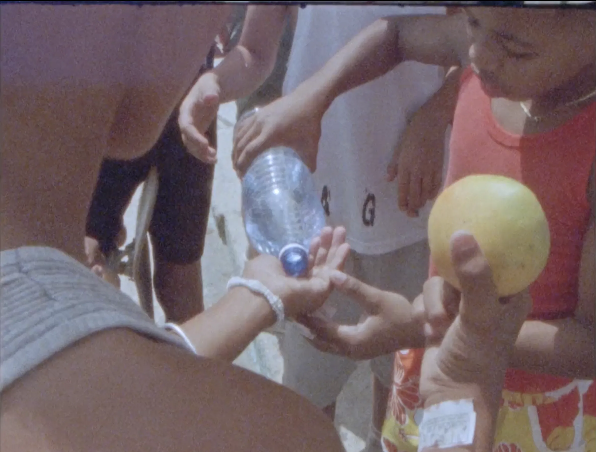

Original score for Boys Will Be Flowers, directed by Daddy Ramazani. A nostalgic portrait capturing the carefree children of Cuba -- a softly cinematic study of young Cuban skaters hanging out on sun-drenched streets.
Featured by NOWNESS (2018). Official Selection at Le Festival International du Film sur l'Art (Le FIFA).
